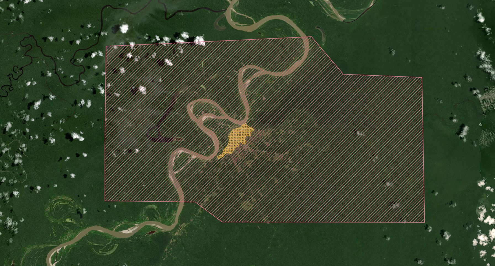

6.3 Creating Exports of a TM Project
Toward the end of a TM project, someone in the data usability role typically makes exports of the project area using the HOT Export Tool. This section provides tips for making the exported data more user friendly for the data end-user.
Choosing the export area
When exporting data for one city / population center:
- The export area should include the entire Tasking Manager project area
- The export area should not include any regions with missing or unvalidated data.
- The export area should be convex if possible. Missing data in the middle of a map is confusing.
- Consider exporting a larger area to include also major nearby terrain landmarks, such as rivers, coastline, and connecting roads. for example project #6059 - Lagunas, Peru, the export included a section of the nearby river (TM area in yellow, export area in red):

Choosing what features to export
The HDX preset in the HOT Export Tool is usually a good place to start for a generic basemap. It includes buildings, roads, waterways and POIs (amenities, etc.).
Other common features to add are:
- landuse=residential polygons, if mapped during the project
- coastlines
- airport data: Large airports, if not exported, leave confusing holes in map data if the are not annotated in some way. Even if airports are not part of a project, you can ask an advanced mapper to map at least the runways to avoid confusion.
- street addresses and hourse numbers: they are included in the HDX preset, but are often not mapped in project. Consider excluding them from the export if the majority of the exported data does not have address information, or it is otherwise low quality.
Try to use a consistent set of exported features throughout an activation in different export products when possible. Consistency makes it easier for the end user of the data to make maps and other products from the different exports. A good way to maintain consistency, is to save the Export Tool YAML file, and use if for all exports during the activation.
Export file formats
Unless the end user for the export asks for something in particular, as safe choice is to export as Geopackage and Shapefile. Both formats are widely supported by modern GIS tools.
When appropriate, also consider exporting Garmin IMG for handheld devices or Google Earth KML file. Google Earth Pro (the desktop version) supports ESRI shapefiles, but the browser version don’t.